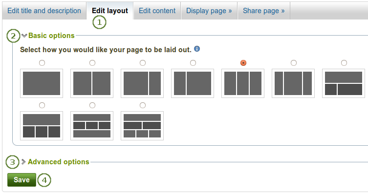

A Website would follow the different of type and have their own functions, normally website is divided into business websites, knowledge websites, education websites, online communities websites, ecommerce websites and game websites, example of those function is payment use for trading product, online gaming is use for playing game immediately, categories is use for sorted product's quality, price and more, search function is use for search product and information, communications platform, use for communicate with each other, employ function is company use for hire employees.
A target audience in marketing is mean a particular group of consumer and taget marketing that was predetermined on thier product, they will focus their product on a specific consumer gruop, it's mean if they are selling guitar, the target audience would focus on parents or grand parents for let them know it can brought a lot of benifit for thier children, we can sorted target audience with product's function consumer's age, habbit and hobbies
The term of house style in ICT is company use for communicate with customers or basically a set of rule how documents and written communication from business that should be format, govern thing of it is colour, font size and style, position of logo, address, contact detail and text. After that, it also can be applied to mant type of document and methods like business cards, memos, report, advertising, letter head paper and more.
With the improvement of internet, web site style design are become very important for us. the layout of style is very important to figure of website. Here some website layout for different websites. First is three box layout we can use for educatinal website. A main graphic followed by two small box, a simple and clean design for audience. Second is 3D screenshot layout, a very modern layout suitable on technology devices. A headline and toss in some stylized previews of application, these often come with reflections, heavy shadows. Third is advanced grid layout, suitable to use on commodity for show their commodity like apparel or furniture As with the three box layout, one primary graphic heading up the page, space for a span of four squares horizontally. Last, power grid layout, suitable for media, news or website for music most complex layout because it need to contain all kind of various related content, image , music and more.
Some common development methodologies is waterfall project management, a legacy model for software development project. This model is development lifecycle has fixed phases linear timelines and not capable on addressing the challenges in modern sofware development domain. Next, scrum, an agile methodology. a methology for improve team productivity dramatically by removing every possible burden and scrum projects is managed by Scrum master. After that, System Development Life Cycle (SDLC), a conceptual model use in software development project, it's possibility of combining two or more project for the best outcome. Furturemore, PRINCE2 is take a process-based approach to project management and base on eight high-level processes. Last, Feature Driven Dvelopment (FDD), this methologies is more focus on simple processes, short iterative. All planning and execution in this project type take place based on the feature.
Some tools and diagram used to establish well communication during requirement gathering phase is context diagram, a system context diagram defines the system boundary, the system is plotted inmiddle of diagram and identifies customers or internal system and it's also help to define the context that system site so end user could agree to what is out of scope in project. Next is mind maps, awesome tool to capture idea, requirement organize conversation with many tangents and it's easy to run off-topic and leap to another business process need when we in arequirement gathering session. This tools will also provide an option to generate the mammoth requirements document. After that, function decomposition, a diagram provide a top-down view of business process and system's major functions, it's similar to organization chart and we would be able to easily relate the model. Next is sequence diagram, it's use for show the interactions between objects over time, it provide a top-to-bottom view with messager being sent back, and it's can also use for identify the different type of email notificatio need to send to customers.